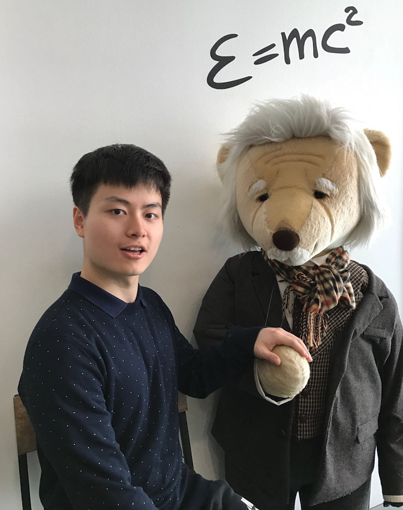

Bo Liu
Be a scientist out of interest :)

I am a Ph.D. student at UT Austin and I am very forunate to be co-advised by Prof. Peter Stone and Prof. Qiang Liu. My research interest lies in multitask/continual learning, reinforcement learning, imitation learning and their applications in robotics. Specifically, I am interested in designing theoretically sound algorithms and neural architectures for training large-scale multi-purpose agents. Before joining UT Austin, I completed my master's at Stanford University and my undergraduate studies at Johns Hopkins University.
Contact: Email / Github / Google Scholar / Twitter
Experience
| Jun - Oct 2023 |
Google DeepMind, London –
Research Intern Mentor: Arthur Szlam, Marc'aurelio Ranzato |
| Jun - Sept 2020 |
Nvidia, Sunnyvale –
Research Intern Mentor: Animashree Anandkumar, Yuke Zhu |
| Jun - Sept 2018/2019 |
Baidu, Sunnyvale –
Research Intern Mentor: Ping Li |
| May - Aug 2015/2016 | Google, Los Angeles – Software Engineer Intern |
Selected Publications (* ⇒ equal contribution)
Communication Efficient Distributed Training with Distributed Lion
Asynchronous Local-SGD Training for Language Modeling
Oral presentation at WANT@ICML 2024
LLM+P: Empowering Large Language Models with Optimal Planning Proficiency
paper /
code
LIBERO: Benchmarking Knowledge Transfer for Lifelong Robot Learning
NeurIPS 2023 (oral presentation at RAP4Robots, ICRA 2023, and TGR, CoRL 2023)
Metric Residual Networks for Sample Efficient Goal-Conditioned Reinforcement Learning
AAAI 2023 (oral presentation)
Coach-Player Multi-Agent Reinforcement Learning for Dynamic Team Composition
ICML 2021 (oral presentation)
Firefly neural architecture descent: a general approach for growing neural networks
NeurIPS 2020
DualSMC: Tunneling Differentiable Filtering and Planning under Continuous POMDPs
IJCAI 2020
Predicting pregnancy using large-scale data from a women’s health tracking mobile application
WWW 2019
Teaching
| Fall 2019 | University of Texas at Austin – Teaching Assistant CS 394: Reinforcement Learning |
| Winter 2019 | Stanford University – Teaching Assistant CS 234: Reinforcement Learning |
| Fall 2016 | Johns Hopkins University – Teaching Assistant EN 601.665: Natural Language Processing |
| Fall 2015 | Johns Hopkins University – Teaching Assistant EN 600.463: Algorithms |